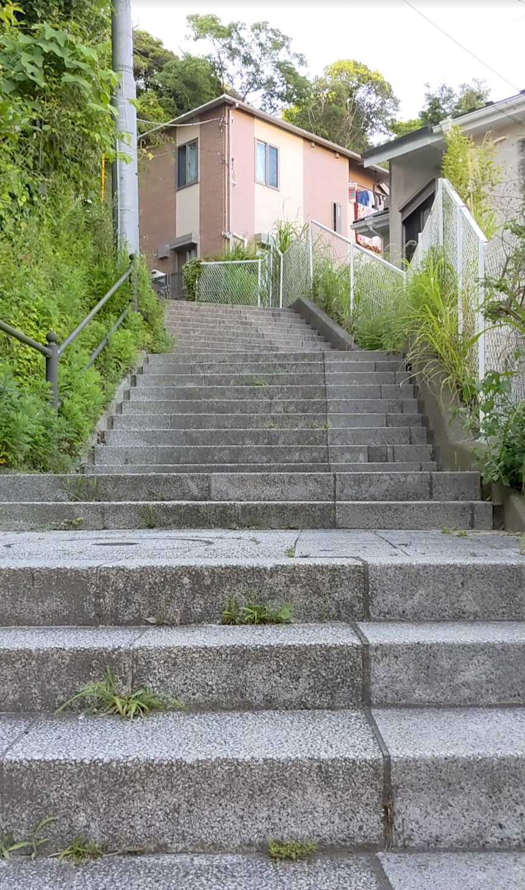
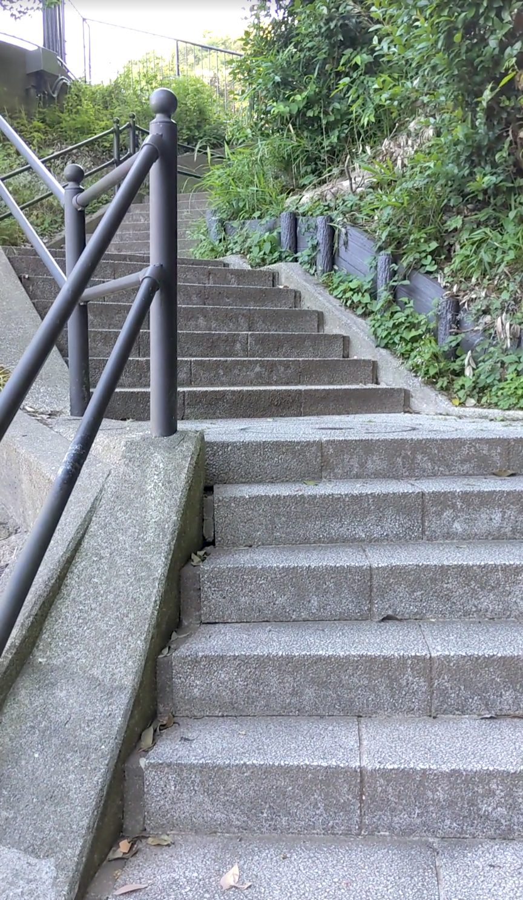
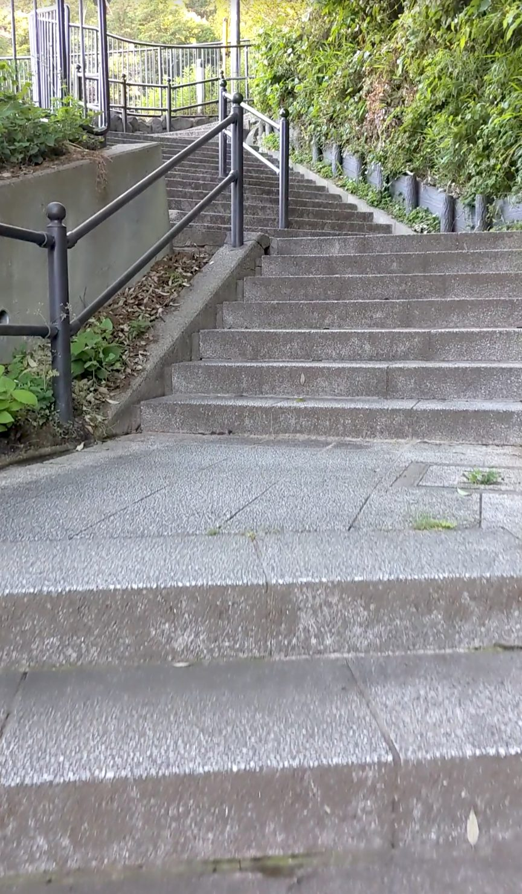
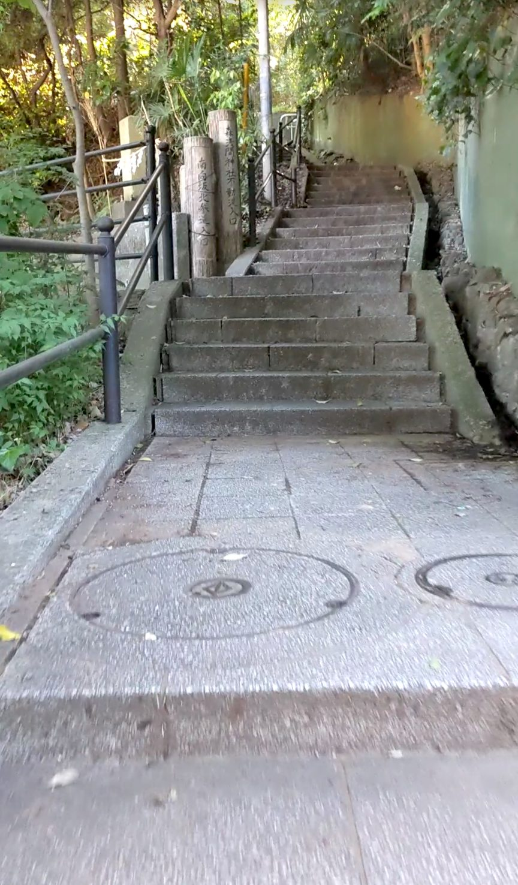
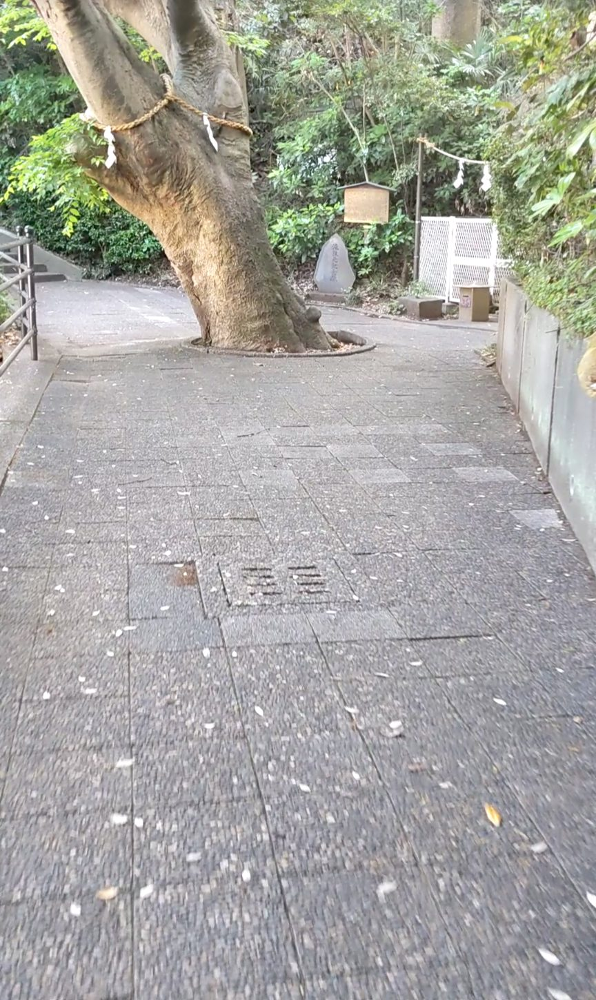
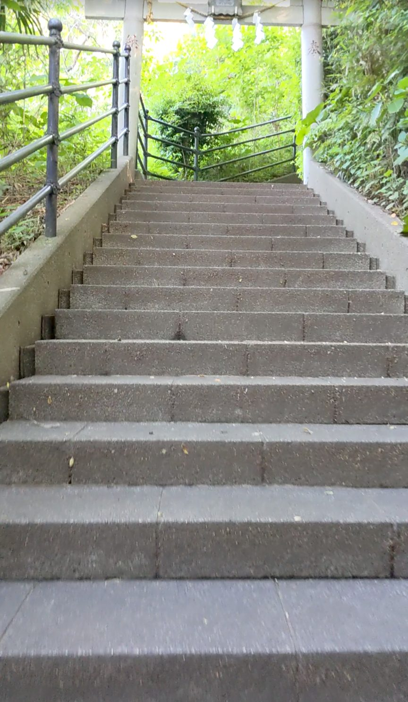
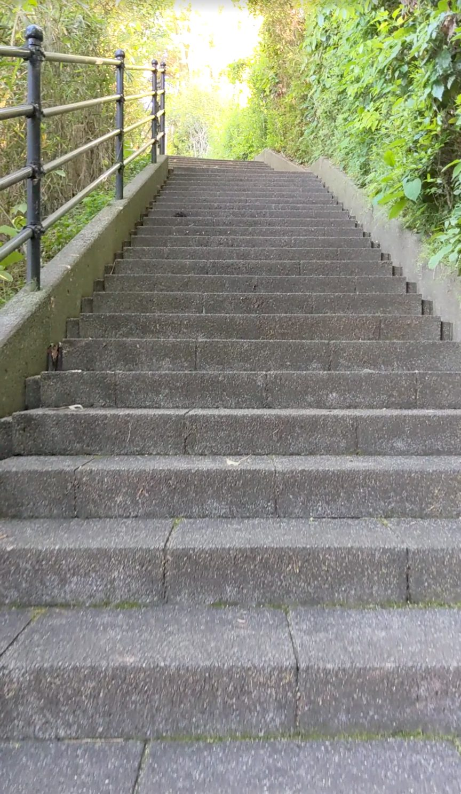
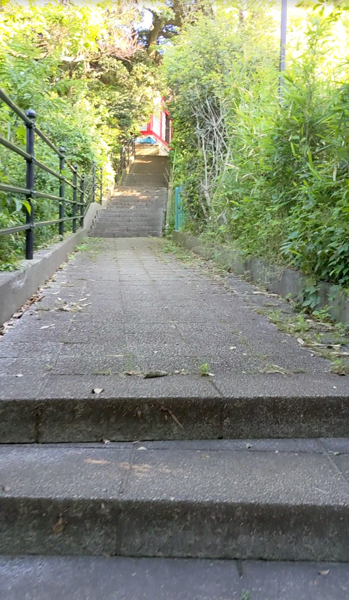
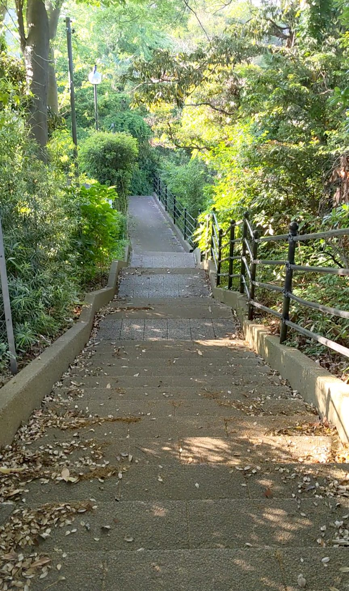

森浅間神社には整然とした白い鳥居と長い一直線の石段が印象的なその1とは別に、321段のもうひとつのルートがあります。JR京浜東北線の磯子駅から徒歩約10分。こちらは急に高さを稼ぐのではなく、自然の丘に沿うようになだらかに回り込みながら登っていく構造です。途中に平らな道やベンチ、分岐の標識、そして大きな木と鳥居が重なる見事な景色があり、321段という数字以上に充実した登り体験ができます。
JR京浜東北線「磯子駅」下車、徒歩約10分。その1と同じく森浅間神社の境内へ向かうルートです。分岐の標識に従って進みましょう。
321段と段数は多いですが、なだらかな設計で途中に平らな道やベンチもあるため、休憩しながらマイペースに登れます。歩きやすい靴と水分補給を忘れずに。落ち葉が多い箇所は滑りやすいことがあるのでご注意ください。
登り始めると、序盤からすでにこの石段の個性が出てきます。段が細かく区切られていて、少し登るとすぐ方向が変わります。一直線に上を目指すのではなく、丘の形に沿ってなだらかに高さを稼いでいく感じです。息が上がりにくく、足への負担が自然と分散されていきます。




途中で分岐があり、標識が立っています。迷わず標識どおりに進むと、しばらくして平らな道に出ます。そのそばに大きな木が一本。休憩スペースにもなっていて、ここで一息つくと、自分がずいぶん高いところに来たことがわかります。

平らな道を抜けると、鳥居が視界に入ってきます。「もうすぐだな」という気持ちが自然と湧いてきます。先ほどの大きな木、そしてこの鳥居——この2つが間をおいて登場することで、頂上へと気持ちを引っ張っていく演出になっています。意図したものかどうかはわかりませんが、「すごいな」と感じました。

さらに進むと、木々の葉が太陽の光を受けてきらめく場所に差しかかります。光が木々に反射して、神々しさすら覚える景色です。夕方の斜光だからこそ生まれる表情で、この時間帯に来てよかったと思いました。

赤い社が見えてきました。このあたりでも段が細かく区切られていて、最後までなだらかなペースを保って登れます。321段登ってきたのに、極端に息が上がっていないことに気づきます。

頂上まで登って石段を見下ろすと、階段がなだらかだったことに改めて気づかされます。急勾配では決してなく、丘に沿って優しく高さをつないできた321段です。適度に落ち葉が散っていて、自然の中にいるのだなということをしみじみと感じました。森浅間神社を訪れる際は、その1とその2、両方のルートをぜひ歩いてみてください。
